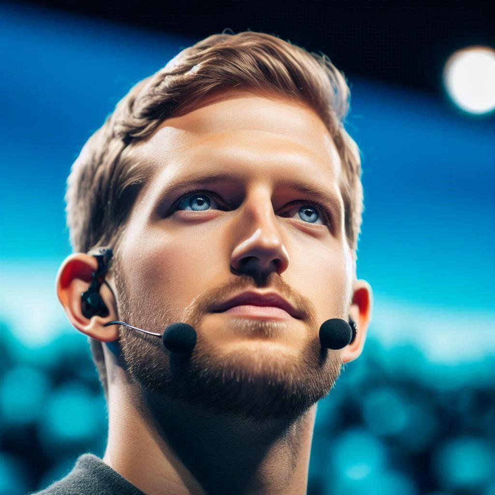
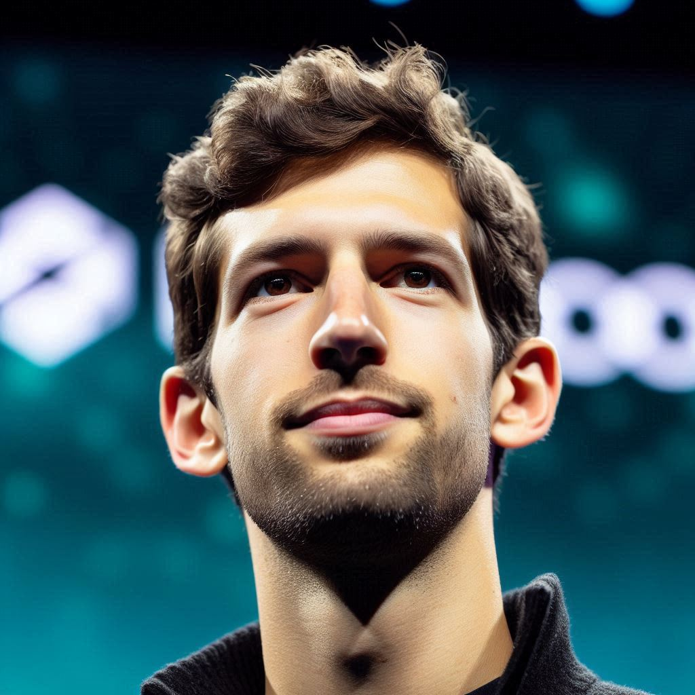
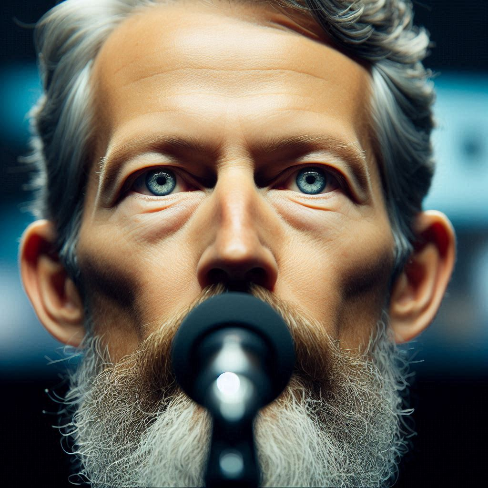
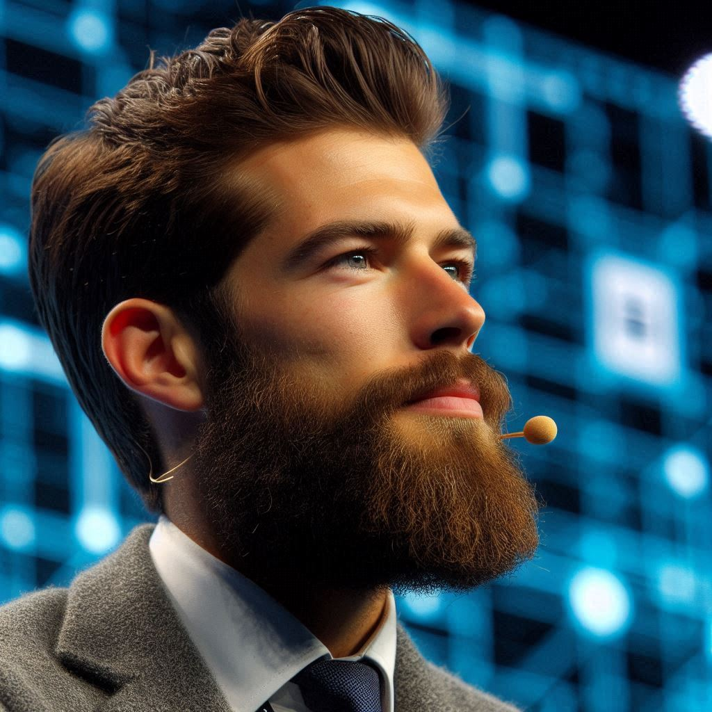

Está chegadando!
12/10/2024
12/10/2024
24 anos
SpaceX CTO
28 anos
Doutor em A.D.S
21 anos
PhD em ADS
30 anos
X TechLead
Neste evento, abordaremos as tendências mais recentes no desenvolvimento da inteligência artificial e seu impacto em diversas indústrias, desde saúde até finanças. Vamos explorar como o aprendizado de máquina e a IA generativa estão mudando a maneira como trabalhamos e vivemos, além de discutir questões éticas e de segurança relacionadas a essa tecnologia emergente. O que o futuro nos reserva e como podemos nos preparar?
Com o aumento da dependência tecnológica, a segurança cibernética se tornou uma prioridade máxima para empresas e indivíduos. Neste evento, discutiremos as melhores práticas de proteção de dados, as últimas tendências em ataques cibernéticos e como a IA e o blockchain estão sendo usados para melhorar a segurança digital. Vamos abordar tanto os desafios quanto as oportunidades no campo da segurança cibernética e o que podemos fazer para nos proteger nesse ambiente digital em rápida evolução.
A computação quântica está redefinindo os limites da ciência da computação. Neste evento, explicaremos o conceito por trás dessa tecnologia revolucionária e suas possíveis aplicações, como criptografia avançada, simulações de moléculas para descoberta de novos materiais e avanços na IA. Vamos discutir como ela pode transformar indústrias inteiras e o que ainda precisa ser desenvolvido para que a computação quântica se torne uma realidade prática.
Tech Summit 2024 será realizado no Centro de Convenções Inovatec, localizado no coração da cidade.
O espaço moderno e de fácil acesso oferece uma infraestrutura completa para receber participantes de todo o país.
Endereço: Av. Tecnologia, 1234, Bairro Inovação, São Paulo - SP, Brasil
Estacionamento disponível e fácil acesso por transporte público.
Explore o mapa ao lado para encontrar rotas e opções de transporte para facilitar sua chegada.